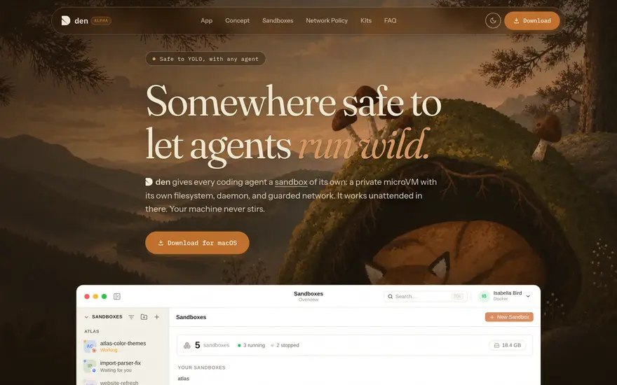

Den archived
Somewhere safe to let agents run wild — the app for Docker Sandboxes. Every coding agent gets a private microVM with its own filesystem, daemon and guarded network, so it can build, install and rewrite freely while your machine never stirs.